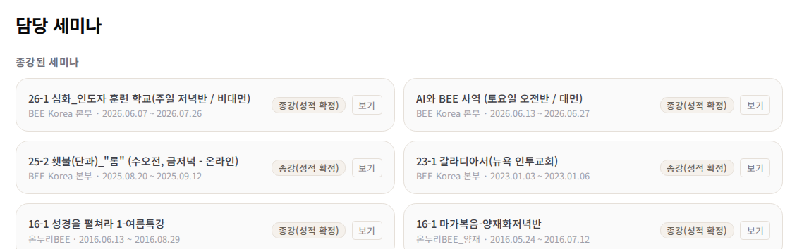
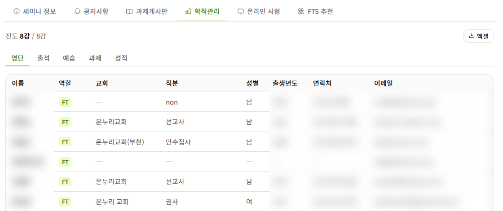
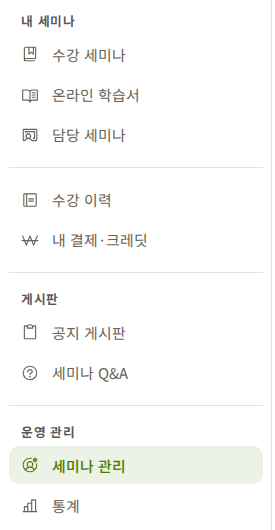
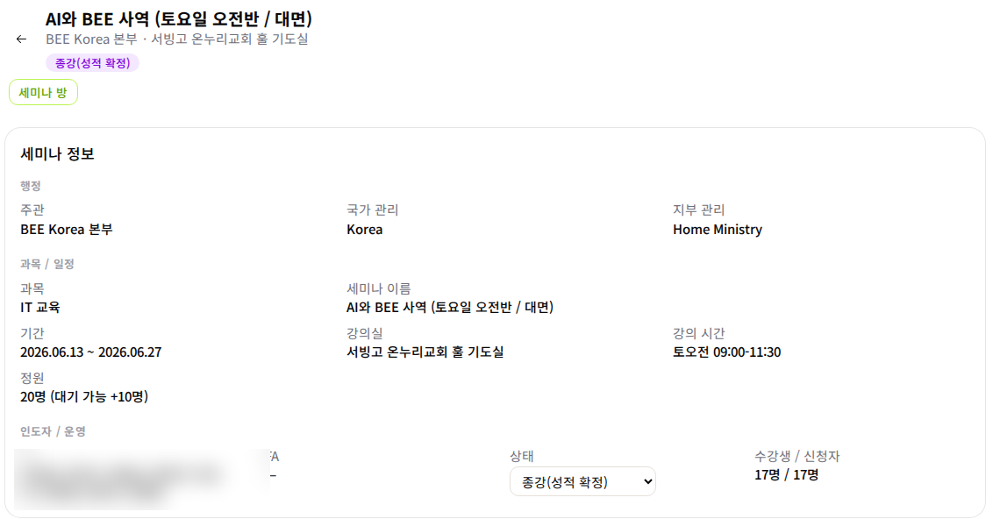
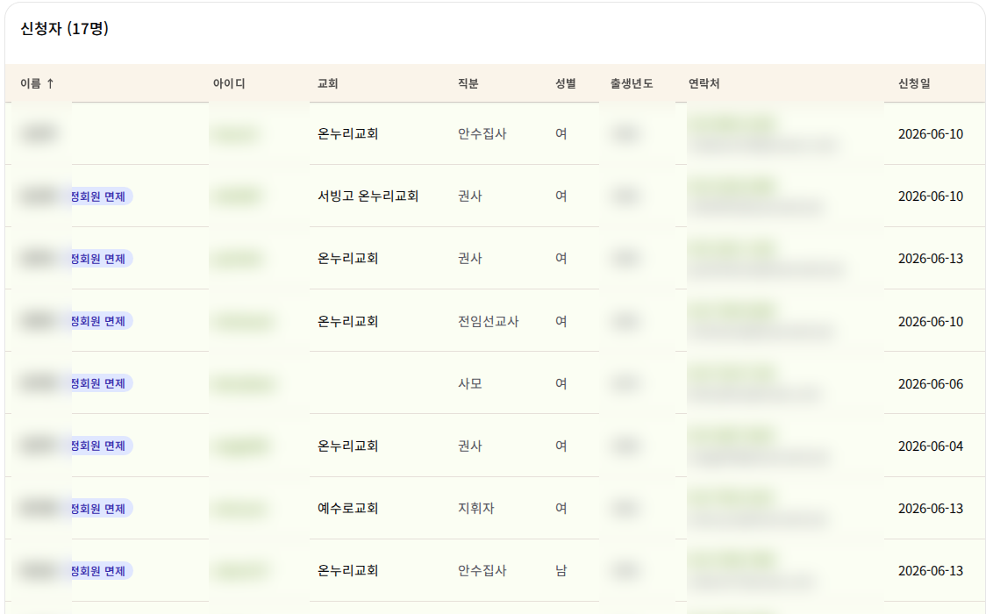
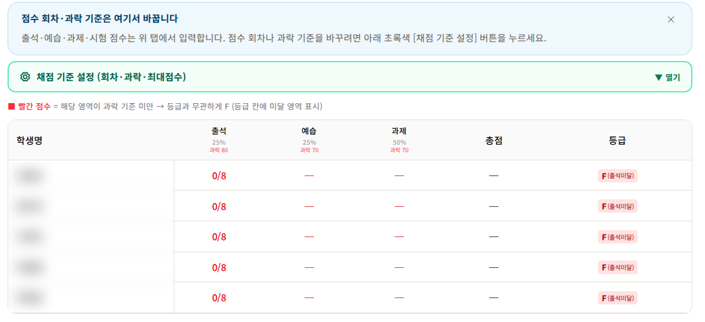
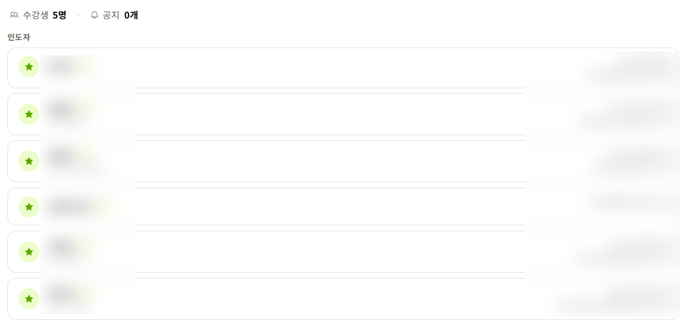

개편된 홈페이지에서 인도자가 손대는 자리는 「담당 세미나」입니다. 명단·출석·점수·성적·FTS 추천이 모두 그 안에 있습니다. 이 안내는 학기 순서대로 읽으시면 됩니다.
lms.beekorea.org — 예전 주소와 예전 화면은 없어졌습니다. 아이디로 로그인하거나, 구글·카카오 계정으로도 들어오실 수 있습니다.
로그인하면 왼쪽 메뉴 「내 세미나 → 담당 세미나」. 맡으신 반이 카드로 보이고, 카드의 보기를 누르면 세미나 방이 열립니다.

구글 드라이브 「국내사역본부 › 인도자 자료」 폴더에 과목별로 정리돼 있습니다. 예전 홈페이지의 「인도자 자료실」은 없어졌습니다. 인도자 자료 폴더 열기
배정된 반의 온라인 학습서는 개강 5주 전부터 종강 2주 후까지 미리 보실 수 있습니다 — 왼쪽 메뉴 「온라인 학습서」로 들어가시면 자기 반 학습서가 열려 있습니다.
세미나 방을 열면 위쪽에 탭이 있습니다. 학생 명단과 점수는 모두 「학적관리」 탭 안에 있습니다.

명단이 실제 오신 분들과 다르면 본부에 알려 주십시오 — 인도자가 명단을 직접 고치지는 않습니다.
예습 등 학생 준비사항을 안내하고, 교재 수령 여부를 확인해 주십니다. 과목별 카톡방의 진도를 서로 공유하시면 보강할 때 참고가 됩니다.
미납 확인은 세미나 방이 아니라 「세미나 관리」에서 합니다. 왼쪽 메뉴 운영 관리 → 세미나 관리. 인도자는 자기 반만 보입니다.

반을 누르면 상세가 열립니다.


읽는 법은 한 문장입니다 — 신청자에 남아 있고 수강생으로 넘어가지 않은 사람이 입금 확인 전입니다. 입금이 확인되면 본부가 수강생으로 등록합니다.
| 배지 | 뜻 |
|---|---|
| 입금 신고 | 학생이 「입금했어요」를 눌러 알린 상태. 본부 확인을 기다립니다 |
| 정회원 면제 | 책값·후원금이 면제됩니다. 택배비 등은 청구될 수 있어 0원이 아닐 수 있습니다 |
| 목회자·선교사 면제 | 후원금만 면제됩니다 — 책값·택배비는 냅니다 |
| 재수강 / 미수료 재수강 | 이미 들은 과목을 다시 듣습니다. 둘은 내는 금액이 서로 다릅니다 — 미수료 재수강은 무료, 수료 후 재수강은 후원금을 냅니다 |
| 청구 미확정 | 금액이 아직 정해지지 않았습니다 — 0원이라는 뜻이 아닙니다 |
| 선수과목 미수료 | 먼저 들어야 할 과목을 아직 수료하지 않았습니다 |
| 이월 | 이번에 안 듣고 다음에 듣기로 했습니다 |
인도자는 보고 권유하는 자리입니다. 입금 확인과 수강생 등록은 본부가 합니다. 정확한 청구 금액은 학생의 신청 내역에 항목별로 계산되어 있으니, 금액 문의는 인도자가 답하지 마시고 본부로 안내해 주십시오.
온누리 교인이 OBC 학점을 인정받으려면 아이스쿨과 BEE 홈페이지 양쪽에 신청해야 합니다. 아이스쿨에만 신청하면 홈페이지에 학생이 없어서 출석·성적 처리를 할 수 없습니다.
같은 세미나 상세 화면 아래쪽에 「아이스쿨 대조」가 생깁니다. 본부가 아이스쿨 신청 명단을 올리면 홈페이지 신청과 자동으로 맞춰서, 학생마다 완료 · 신청 누락 · 미가입으로 표시됩니다 — 「신청 누락」·「미가입」인 학생에게 홈페이지 가입·신청을 권유해 주십시오. 학생이 가입·신청하면 목록에 바로 반영됩니다.
「학적관리 → 성적」에 들어가면 초록색 줄이 있습니다. 우리 반의 출석 회차, 예습 회차, 과제 횟수, 시험 횟수와 만점, 과락 기준을 여기서 정합니다. 이걸 먼저 정해 두지 않으면 점수 넣을 칸의 개수가 실제 수업과 맞지 않습니다.

비워 두면 과목 기본값을 씁니다. 과락 기준에 0을 넣으면 그 영역은 과락 없이 갑니다.
「담당 세미나」 카드에 개강으로 전환 버튼이 보입니다. 이걸 누르면 반 상태가 「개강」이 되고, 그때부터 출석과 점수를 넣을 수 있습니다.
꼭 첫 수업 날까지 기다리실 필요는 없습니다 — 학생이 다 차고 준비가 되면 세미나 시작 전에 미리 개강으로 돌리셔도 됩니다. 학생 수가 다 차면 본부에서 먼저 개강으로 돌리는 경우도 있으니, 상태가 이미 「개강」으로 되어 있다면 그대로 진행하시면 됩니다.
개강일이 지났는데 상태가 그대로면 화면이 알려 줍니다. 직접 못 바꾸시는 상태라면 본부에 상태 변경을 요청해 주십시오.
「학적관리」 맨 위에 진도가 있습니다. 한 강을 마치실 때마다 올려 주시면 학생 화면에도 같이 반영됩니다.
점수는 영역별로 탭이 나뉘어 있습니다.
반 학생들에게 알릴 것은 「공지사항」, 과제를 걷고 나누는 것은 「과제게시판」을 쓰시면 됩니다.
마지막 수업이 끝나면 「담당 세미나」 카드의 수업 종료 를 누릅니다. 반 상태가 「수업 종료(성적 정정)」이 됩니다. 예전 안내의 「종강 표시」가 이 버튼이고, 이 단계까지는 점수를 계속 고칠 수 있습니다.
이 기간에 마치실 일이 네 가지입니다.
명단 탭이 아닙니다. 세미나 방 「세미나 정보」 탭 아래쪽 「인도자」 카드에서, FA 카드 오른쪽 배지를 누릅니다.

규정은 그대로입니다 — FT는 FA와 2회 인도 일정을 정해 통지하고, 첫 번째는 FT 평가, 두 번째는 본부 참관 평가입니다. FA는 학습계획서를 인도일 24시간 전에 제출합니다.
마지막 수업 후 2주 안에 마쳐 주시길 부탁드립니다. 임직자 학점 제출 시점이 걸려 있는 학기에는 그보다 늦지 않게 끝나야 합니다.
인도자가 누르는 마지막 버튼은 「수업 종료」까지입니다. 성적을 최종 확정하는 「종강(성적 확정)」은 본부에서 처리합니다. 확정되면 점수가 잠기니, 고칠 것은 「수업 종료」 단계에서 끝내 주십시오.
확정 후에는 학생이 인도자 평가를 마치면 최종 성적을 볼 수 있습니다.
종이 학습서로 공부하는 반도 됩니다 — 반이 온라인 학습서를 쓰지 않아도, 학습서의 문항으로 단원시험을 온라인으로 열 수 있습니다. 「온라인 시험」 탭에서 우리 반 과목의 학습서를 고르고 시험 열기 — 제한 시간, 만점, 문항 섞기, 그리고 점수를 성적표의 어느 시험 칸에 넣을지를 정합니다.
학생은 「내 시험」에서 응시하고, 인도자는 응시·제출·채점 현황을 보면서 채점하기에서 답과 정답을 나란히 보고 최종 점수를 정합니다. 확정한 점수는 성적표의 빈 칸에만 채워지고, 이미 적어 두신 점수는 덮어쓰지 않습니다.
쓰실 반은 따로 안내드립니다. 이번 학기에 꼭 쓰셔야 하는 것은 아닙니다.
오래 쓰신 분들이 가장 헷갈리는 세 가지입니다. 예전 안내는 이제 맞지 않습니다.
| 예전 안내 | 지금 |
|---|---|
| 세미나 종료 후 「종강 표시」를 한다 | 두 단계로 나뉘었습니다. 인도자는 「수업 종료」까지, 최종 「종강(성적 확정)」은 본부가 누릅니다. 확정되면 점수는 잠깁니다. |
| 종강 표시를 안 하고 성적을 기재하면 다른 학생들이 점수를 볼 수 있다 | 이제 그렇지 않습니다. 성적표는 인도자·본부만 열립니다. 학생은 자기 성적만, 확정 전에는 「잠정 성적」으로 봅니다. 학기 중에 편하게 기록하셔도 됩니다. |
| 과정계획서·시험문제·출석부는 「인도자 자료실」에서 내려받는다 | 예전 자료실은 없어졌습니다. 자료는 드라이브 「인도자 자료」 폴더에, 출석부·학적관리표는 명단의 [엑셀]로 받습니다. |
| OBC 신청·수료 | 김한호 집사 |
|---|---|
| 인도자 조정, 입금 확인, 온라인 수업 계정, 교재(이북) 발송 | 본부 |
| 그 외 세미나 관련 | 장영호 집사 |
| 홈페이지가 이상할 때 | 홈페이지 안 「세미나 Q&A」 게시판에 남겨 주시면 확인합니다 |